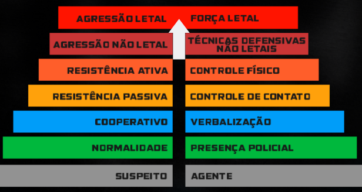

Introdução ao curso de Abordagem
O Curso de Abordagem Policial tem como objetivo capacitar os policiais da cidade de Fronteira Leste com habilidades e conhecimentos essenciais para realizar abordagens de forma segura, eficaz e respeitosa, garantindo a segurança da comunidade e dos próprios agentes.
GATE não realiza abordagem em QRU comuns (Drogas, caixinha, visual armado, etc), manter a altura mínima de um poste (Salvo quando ocorrer uma QRU em locais onde uma viatura é inviável ou necessite dar um aviso em locais inacessível ou de risco);
1. Tipos de Abordagem
Abordagem de Trânsito (cód.1)
A abordagem de trânsito é uma ação fundamental da polícia para garantir a segurança nas vias, prevenir infrações e assegurar o cumprimento das leis de trânsito. Durante essas abordagens, os policiais interagem diretamente com os condutores, verificando documentos, condições do veículo e comportamento do motorista.
Mais do que fiscalizar, essa também é uma oportunidade de conscientização. Os policiais orientam sobre práticas seguras, como o uso do cinto de segurança, respeito aos limites de velocidade e a proibição do uso do celular ao volante.
Todas as abordagens devem ser realizadas com profissionalismo, cortesia e respeito aos direitos dos cidadãos, evitando qualquer tipo de abuso ou discriminação.
Neste tipo de abordagem está proibido a revista
Abordagem Criminal (cód.2)
A abordagem criminal é uma das ações mais delicadas e importantes realizadas pela polícia, envolvendo o contato direto com suspeitos de atividades ilícitas. Ela faz parte das operações que visam prevenir crimes, investigar comportamentos suspeitos e proteger a segurança pública.
Por lidarem com possíveis ameaças, os policiais enfrentam desafios e riscos tanto para si quanto para a comunidade. Por isso, a atuação deve ser sempre cautelosa, profissional e respeitosa aos direitos individuais.
Durante essas abordagens, é essencial que os agentes avaliem a situação com rapidez, identifiquem possíveis perigos e ajam com eficácia. Isso inclui o uso de comunicação estratégica, técnicas táticas e métodos de contenção para garantir a segurança de todos os envolvidos.
Neste tipo de abordagem está permitido a revista, respeitando os direitos do cidadão.
2. Princípis básicos da abordagem
Procedimento
Sempre que iniciado uma abordagem, deve-se pensar em sua vida e na vida dos companheiros de sua VTR, sempre que for abordar alguém chame apoio de mais 2 unidades e apenas quando uma das unidades chegar inicie a abordagem, isto serve pra evitar que o oficial fique sozinho contra 2 ou mais indivíduos.
"QAP central, solicito apoio de 2 unidades próximo ao estacionamento branco para iniciar uma abordagem em um VECTRE tripulado x2."
Este tipo de modulação deve ser feito no máximo 3 vezes por abordagem, se caso após as 3 modulações ninguém compareceu, inicie a abordagem apenas com sua unidade e com muita cautela.
Dado o início da abordagem, caso solicite o P2 de sua VTR para que jogue as informações do veículo no CP
MODELO | COR | PLACA | QRU | STATUS
Comportamento e funções
No início da abordagem é obrigatório você se identificar ao cidadão
"Boa tarde cidadão, sou o CABO Gustavo Ferreira, tudo bem com o senhor (a) ?..."
A razão da abordagem só deve ser dita após o cidadão concordar com o procedimento
Funções durante a abordagem
- P1- Sempre dentro da VTR, mantendo-a ligada e pronta para iniciar fuga.
- P2- Modula, desce e realiza toda a abordagem.
- P3- Deverá descer e proteger o local da abordagem mantendo a arma em punho
Procedimento detalhado
Ligue seus sinais sonoros e luminoso para avisar ao cidadão que o mesmo deve parar o veículo. Comunique na rádio que você está realizando a abordagem (modulação completa). Assim que o veículo parar, estacione a VTR em um ângulo de segurança, desligue os sinais sonoros mas mantenha os luminosos. O P2 deve descer e realizar todo o procedimento ensinado durante o curso. Estando tudo em ordem, informe ao cidadão que ele poderá seguir viagem assim que você desligar seu sinal luminoso. Retorne a VTR e desligue o sinal luminoso. Informe o CÓDIGO 4 a central e retorne a PTR.
3. Uso Progressivo da Força (UPF)
Consiste na seleção adequada de opções de força pela polícia em resposta ao nível de ameaça do suspeito ou infrator a ser controlado.
NÍVEL 1: PRESENÇA POLICIAL
Estar visível e uniformizado para prevenir crimes e controlar situações sem necessidade de ação.
NÍVEL 2: VERBALIZAÇÃO
Uso de comandos claros, respeitosos e firmes para controlar o suspeito sem uso de força física. Evite discussões e palavrões.
NÍVEL 3: CONTATO FÍSICO
Aplicação de imobilizações leves, como cabeçadas ou segurar o suspeito pelo braço para conter resistência moderada.
NÍVEL 4: TÉCNICAS DE CONTENÇÃO
Uso de taser contra suspeitos que resistem ativamente, garantindo controle sem escalada de violência.
NÍVEL 5: TÁTICAS NÃO LETAIS
Uso de armas não letais, como cassetete, bastão, socos ou disparos para pneus, em casos de maior resistência.
NÍVEL 6: FORÇA LETAL
Uso de arma de fogo apenas em caso de risco letal iminente, respeitando as normas legais.
4. Comportamento em código 5
O uso de armas de fogo em ação policial apenas é permitido em casos de absoluta necessidade como medida extrema, quando outros meios menos perigosos se mostram ineficazes, seguindo os princípios da proporcionalidade. Mesmo assim o policial deve se esforçar para reduzir ao mínimo as lesões e danos ao cidadão.
Permissão de abrir um cód.5
- Roubo de VTR/QSV;
- Tentativa de homicidio
- Avistar com armamento em mão
- Se jogar junto com o veículo na água durante a fuga
No caso de um indivíduo passar diversas vezes em um local de ocorrência de cód. 5, o mesmo deverá ser alertado verbalmente para se retirar. Caso persista, deverá ser realizado disparos de alerta no chão. o último nível será disparos no pneu do veículo e abordagem de cód. 3.
Caso um indivíduo resgate corpo de meliantes neutralizados em QRU de cód 5, a maior patente do momento terá a liberdade de avaliar a situação e decidir a liberação do cód. 5 no mesmo.
5. Legalidade de Revista
Fundanda Suspeita
A busca pessoal independerá de mandado, no caso de abordagem e/ou detenção quando houver fundada suspeita de que a pessoa esteja na posse de arma proibida ou de objetos ou papéis que constituam corpo de delito, ou quando a medida for determinada no curso de busca domiciliar.
A fundada suspeita protege o oficial. Perante a lei, você tem legalidade de revista, tendo enquadrado fundada suspeita, a legalidade de revista está prevista.
Situações de fundada suspeita:
- Uso de coldre e/ou artifícios para arma de fogo;
- Evasão de locais de QRU (Raio de 1km);
- Suspeita durante abordagem (fundamentada por algum comportamento);
- Visualização que o cidadão porta armamento;
Revista Feminina
Fox é como chamamos as oficiais femininas e Steve são os oficiais masculinos. Cada um deve revistar respectivamente a pessoa do seu gênero. Caso na sua VTR não tenha uma mulher e necessite realizar uma revista, deverá ser solicitado uma FOX no seu QTH, e vice versa. Caso nenhum oficial esteja disponível para prestar esse apoio, deverá ser realizado o procedimento da caixa (é liberado revistar com a caixa, porém sempre verbalizando e prezando pela imersão dizendo que é o cidadão colocando as coisas na caixa)
Revista Veicular
Toda QRU que tenha um veículo envolvido, é autorizada a revista veicular completa (verfiicar se documento bate, se há algo no porta malas). Em ações na fuga é OBRIGATÓRIA a revista completa. Já em ações fechadas, se for encontrado veículo na PORTA da ação também é autorizado o procedimento de revista.
Ao chegar numa QRU de código 5 e avistar indivíduos desmaiados, a polícia só poderá revista-los caso o mesmo esteja com armamento em mãos. Caso contrário o kit residual deverá ser passado e a revista só é liberada se o resultado for positivo.